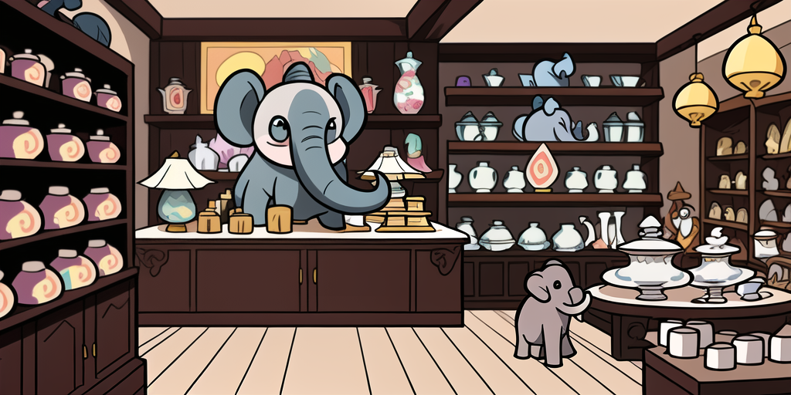

Porcelain Shop

Shell completion is hard. Really hard. And there are all sorts of traps that make you break things unknowingly.
How it works
A function gets passed the current command line up to the cursor position split into words.
command --flag1 positionalArg1 "positionalArg2 with space" <TAB>
# ['command', '--flag1', 'positionalArg1', 'positionalArg2 with space', '']
It then returns possible values to replace the current word with.
posArg3
positionalArg3
The Native Approach
Here, the logic to generate the possible values is done in a native shell script. But writing these isn't easy and tends to become complicated quickly. Few shells even provide a decent framework for it. So everyone ends up making the same mistakes. Over and over again.
Have a look at the script powering your
gitcompletion. It is as impressive as it is scary.
The Generator Approach
Since writing them is so hard some argument parsers generate them. This avoids common mistakes and keeps the script in sync with the application. It is however still bound to the limits of the shell. Writing a good generator is even harder than writing a completion script. So there are inconsistencies between shells. If they are supported at all.
The Combined Approach
Here, a part of the logic is delegated to the application. It handles complex value generation. Like retrieving data from a service. Then returns these to the shell script. But this still relies on shell functions and suffers from the same issues as above.
The Detached Approach
Now let's take this one step further. By not relying on the shell we can reduce the completion script to a minimum using a clear interface. All it does is pass information between the shell and the application. This poses some challenges as well of course. But it ensures consistency between shells. And enables highly advanced features.